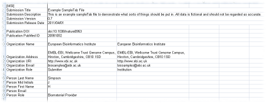
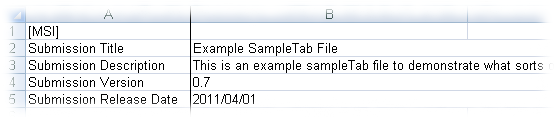
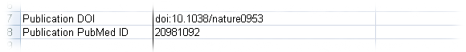
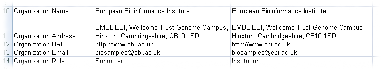
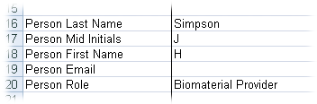
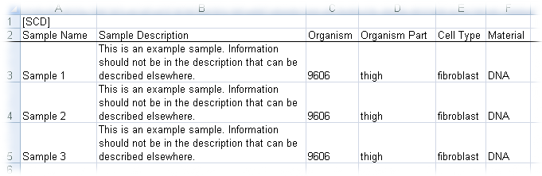

|
Note: Specification of this file format is at an early stage. All details are subject to flux, depending on how useful they are in the face of real data.
SampleTab files can be thought of as spreadsheets (e.g. Microsoft Excel) with all cells set to text. A template is available as a pair of text files (here and here), an Excel spreadsheet, or an OpenDocument spreadsheet. An example is also available as two text files (here and here), an Excel spreadsheet, or an OpenDocument spreadsheet
SampleTab documents are composed of two major sections - Meta Submission Information and Sample Characteristics and Description. The start of each of these parts are identified by [MSI] or [SCD] by themselves on a line. These sections can either be in a single file, or can be in two separate parts (like sheets in a spreadsheet, or multiple files); in such cases, they will be combined together on submission.
There are some general rules that apply to all SampleTab files. These describe overall properties of the file, rather than particular content.:
- The first entry in a row / column (MSI, SCD respectively) of data is known as the "tag".
- If a data cell is empty and data for that tag is optional, then it is assumed that no data is provided for that cell for that tag.
- If a data cell is empty and data for that tag must be provided, such as Submission SampleTab Version, then the file is invalid and will not be accepted.
The following are "best practice" guidelines and should be followed:
- IMPORTANT If using a spreadsheet (e.g. Microsoft Excel) all cells should be set to "text" content at all times. If this is not done, any numbers (sample names, dates, values, identifiers, etc) may be automatically "corrected" wrongly by the spreadsheet. Note that this may cause the spreadhseet software to report numbers as text as errors, ignore them.
- Within the tab-separated cells leading and trailing spaces should be removed.
- Dates and times should be in ISO 8601 format YYYY-MM-DD HH:MM:SS.ss (omitting excessive accuracy when appropriate).
Note: In several places the term "ontology" is used. Ontologies are shared definitions and classifications of terms, much like dictionaries but arranged in a hierarchy (e.g. sarcomer is a kind of cancer, which is a kind of disease). They can also contain links to evidence for that term, and links to other terms to allow logical reasoning (e.g. a "father" is a "parent" that is also "male"). By using the same ontology for different submissions, they can be compared fairly allowing for better searching and presentation of the data.
Meta Submission Information (MSI) ^

The Meta Submission Information (MSI) section is row-based. The first cell in each row must be a tag and the rest of the cells on that row are data associated with that tag. Tags cannot be repeated.
Some Tags are grouped e.g. Person First Name and Person Last Name. It is recommended that groups of tags are separated by blank lines.
- [MSI]
- This specifies the start of the MSI section of the document.
- It must be the only data on a line.
- It must appear before any other MSI tags.

- Submission Title
- Short (approx. 50 chars or less) title of this submission.
- Similar to a paper title, but specific to the samples.
- Must have exactly one entry.
- Submission Abstract
- Short (approx. 1,000 chars or less) description of this submission.
- Similar to a paper abstract, but specific to the samples.
- Must have exactly one entry.
- Please ensure any information about the samples (e.g. species, disease, project, etc) specified here is also specified elsewhere in the file.
- Submission SampleTab Version
- Version number of SampleTab format this document should adhere to.
- Current version is 0.7.
- Must have exactly one data entry.
- Submission Release Date
- Date when submission will become public (e.g. in time with a publication).
- If left blank, it will immediately become public.
- Can be change after submission, for example if a paper publication is delayed.
- Cannot be more than two years in the future.

- Publication DOI
- Digital Object Identifier
- Publication(s) about how the samples were collected / created, not about data generated from the samples or other analysis.
- May be omitted.
- Publication PubMed ID
- Publication(s) about how the samples were collected / created, not about data generated from the samples or other analysis.
- Must be a valid PubMed ID.
- Data must consist of only 0-9.
- May be omitted.
- Both PubMed ID and DOI should only be provided for the same publication if the PubMed record includes the DOI.

- Organization Name
- Name of the organization responsible for the samples.
- Abbreviations should be expanded e.g. European Bioinformatics Institute rather than EBI.
- Organization Address
- Address of the organization responsible for the samples.
- Must be a valid address, including post code and country.
- Organization URI
- Unique Resource Identifier for the organization responsible for the samples.
- For example, the organizations website.
- May be omitted.
- Organization Email
- Must be a valid email address.
- May be omitted, but see note below.
- Files that use the alternative spelling "Organisation" are transformed to "Organization" on submission.
- Organization Role
- Role the organization plays with regard to the samples.
- Examples include "biomaterial provider", "investigator", "submitter", etc.
- If the organization has multiple roles, use one data entry per role and repeat other organization information.
- Must be a valid ontology term, see the Experimental Factor Ontology (EFO) for some suitable terms.
- Files that use the alternative spelling "Organisation" are transformed to "Organization" on submission.

- Person Last Name
- Name of person associated with the samples.
- Typically, this will be authors of publications associated with the samples.
- Person Mid Initials
- May be omitted or blank for some data.
- Space separated single letters.
- Person First Name
- Free text field.
- May be omitted.
- May be an initial.
- Titles should not be used
- Person Email
- Must be a valid email address.
- May be omitted, but see note below.
- Person Role
- Role the organization plays with regard to the samples.
- Examples include biomaterial provider, investigator, submitter, etc.
- If the person has multiple roles, use one data entry per role and repeat other person information.
- Must be a valid ontology term, see the Experimental Factor Ontology (EFO) for some suitable terms.
Note: There must be at least one Person or one Organization that has an email address. If there are more than one person/organization with an email address, at least one must have a "Submitter" role. This will be used for future contact, e.g. for clarification. The email address will be made public so that data users can contact the original submitter.
Same Characteristics and Description (SCD) ^

The SCD section is a column-based arrangement. The cells in the second row (the row after [SCD]) are the tags of the columns.
Samples are identified by a Sample Name which must be unique for each sample. After that, any number of "tags" can be specified to describe the samples. If you want to add additional information to a tag (e.g. Units) use the column immediately following the original tag.
Numeric data should use a full stop as a decimal separator and no other separators. For example, 1234.56 rather than 1234,56 or 1,234.56. Units should be specified in the following column under a Units tag.
Almost anything is usable as a tag in order to accept as wide a range of samples as possible. However, there are some recommended categories that should be included, and some conventions about terms to use e.g. Organism rather than "species" so that e.g. hybrids can be included. In cases where recommended information is not known, state that it is not known; this will avoid other people contacting you in the future for this information. If in doubt, add more information - there is no such thing as an over-described sample!
- Sample Name
- The name given to this sample within this submission.
- Must be specified.
- Sample Description
- A brief description of this sample.
- Ideally approximately 25 words in length
Here are some suggested terms.
- Organism
- Species or other identification of the type of organism this sample is from.
- Species identifiers should be from NCBI taxonomy or NEWT or in either text or numeric identifier.
- Can use multiple Organism columns in case of mixed samples (e.g. combined host and parasite in a single sample)
- Organism Part
- Region of the organism sampled, e.g. liver, blood, ventral midline neuron, etc.
- Can be used with organisms other than vertebrates, e.g. plants, fungi, etc.
- Does not normally apply to single-celled organisms
- Use "whole organism" if the sample was derived from the whole organism rather than a specific part
- Sex
- Sex of the organism this sample is from at the time the sample was taken.
- Only applicable to species that have multiple distinct sexes.
- Strictly biological sex, not gender or other social construct.
- Should be male/female or in other cases as term from a major ontology, such as EFO
- Cell Type
- Type of cells this sample is composed of, if it is known.
- Should be from a major ontology, such as EFO or CL
- Multiple Cell Type tags can be used if samples are of a small number of cell types.
- Material
- What type of sample material this is - live organism, cell line, blood sample, DNA, RNA, etc.
- Should be from a major ontology, such as EFO
- Child Of
- Family relationships should only be indicated using this marker - do not use mother/father (these can be determined from sex) and do not indicate siblings.
- Data should be Sample Name of the parent of this sample.
- Disease
- Name of any known diseases this sample is infected with.
- Includes both infections and other conditions (e.g. cancer).
- Phenotype
- Any phenotype exhibited by the organism this sample was collected from.
- Can use a MeSH or HPO identifier.
- Genotype
- Any known information about the samples genetic background.
- E.g. knockout, insertion, or other genetic modification.
- Developmental Stage
- General developmental stage of this sample.
- If an exact age is known, use Age as the tag and specify the units used in the next column.
A "best practice" collection of terms that should be used with different types of sample (human, mouse, plant, bacterial, meta-genomic, etc) is being developed; if you have any queries/suggestions please contact us.

|